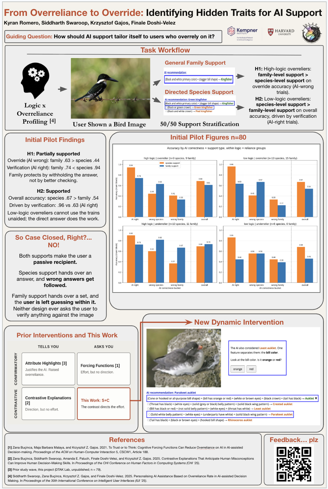

From Overreliance to Override: Identifying Hidden Traits for AI Support
Human-AI Complementarity Workshop: Dynamic Alignment, Carnegie Mellon University, September 2026
A pilot study (n=80) found that family-level AI support protected users when the AI was wrong only by withholding the answer, while species-level support helped mainly when the AI was right. Neither asked users to check the image, so this work proposes a contrastive question that directs users to the one feature that settles the choice.